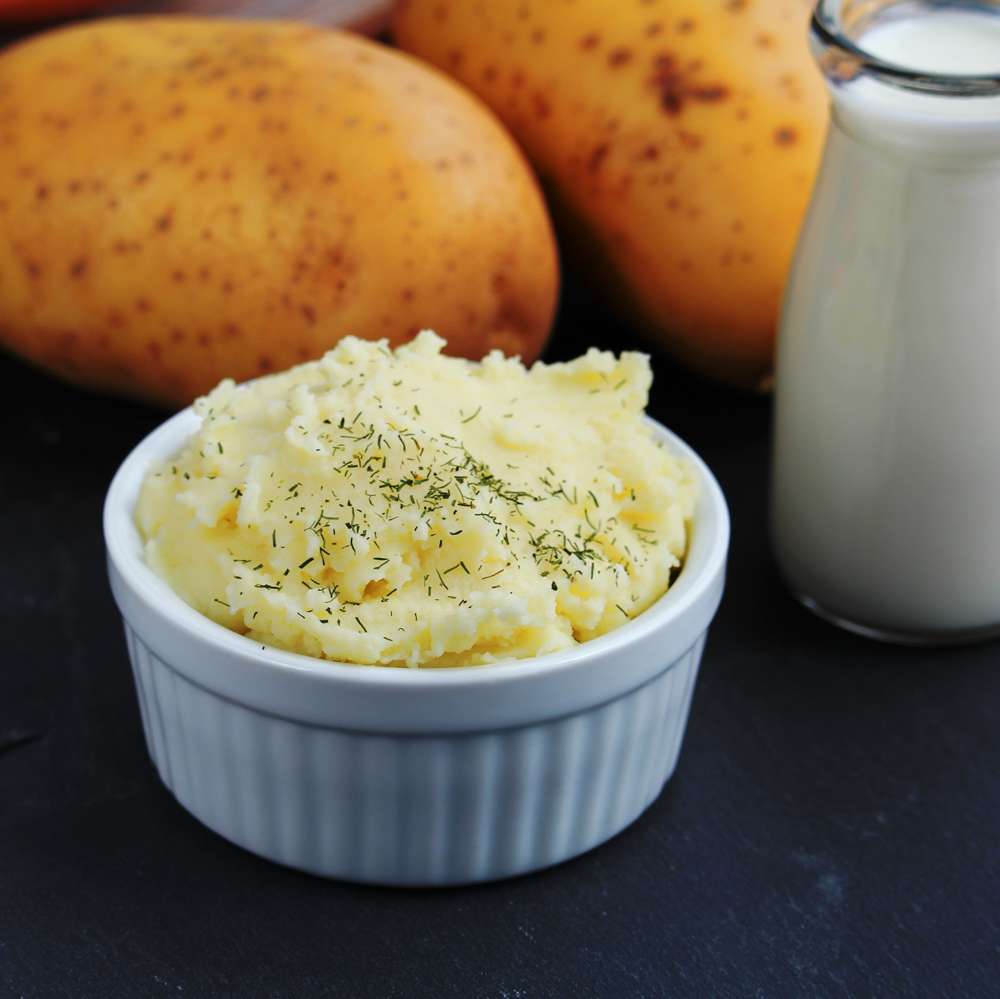

Recipe for Mashed Potatoes

Nutrition
Per Serving: 257 calories; protein 5.6g; carbohydrates 43.7g; fat 7.2g; cholesterol 20.1mg; sodium 76.1mg.
Ingredients
- 2 pounds baking potatoes, peeled and quartered
- 2 tablespoons butter
- 1 cup milk
- salt and pepper to taste
Directions
- Bring a pot of salted water to a boil. Add potatoes and cook until tender but still firm, about 15 minutes; drain./li>
- In a small saucepan heat butter and milk over low heat until butter is melted. Using a potato masher or electric beater, slowly blend milk mixture into potatoes until smooth and creamy. Season with salt and pepper to taste.